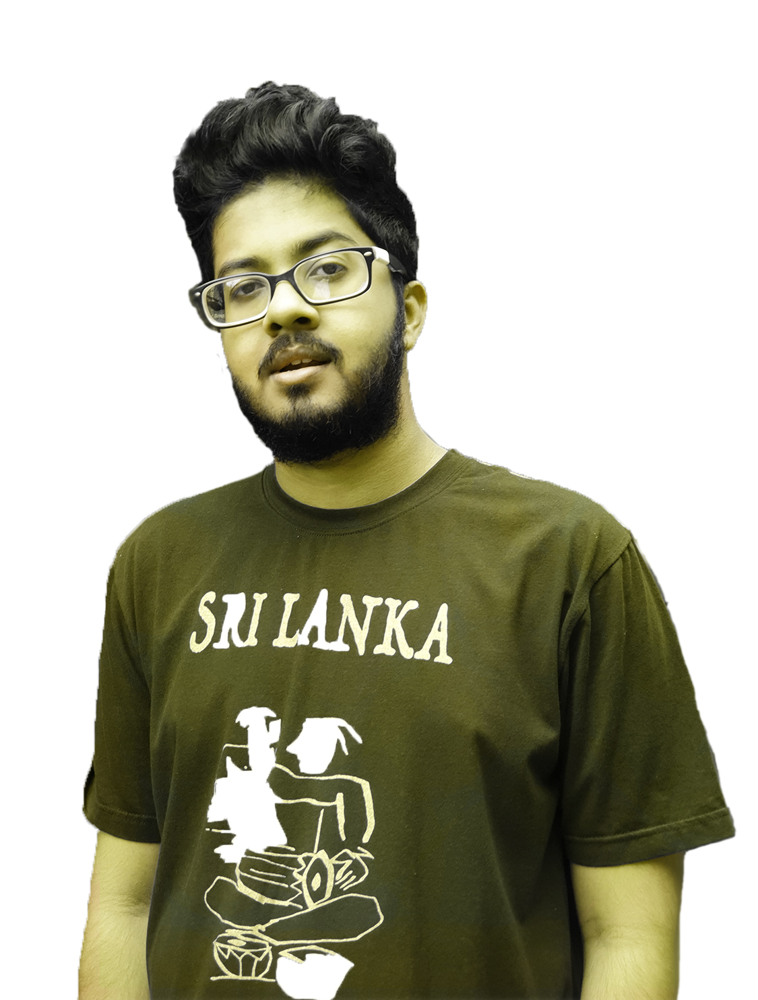

Mithun Kanishka
Graduate Engineer

Mobile: +94 764672975
Email: kanishkamithun7@gmail.com
Profile
I am a fresh civil engineering graduate embarking on an
exciting career transition into the IT sector.
As I transition into the IT sector, I am enthusiastic about
leveraging my skills, such as leadership, analytical thinking,
problem-solving, and effective communication, to contribute
to dynamic teams and drive impactful projects.
Education
BSc (Hons) in Civil Engineering (2023)
Faculty of Engineering - University of Moratuwa
Washington Accord Accredited
GPA - 3.40 / 4.20 | Dean's List in Semester 7 and Semester 8
Diploma in English (2023)
National Institute of Business Management, Kurunegal
GCE Advanced Level (2017)
Maliyadeva College, Kurunegala
3A Passes in Physical Science Stream
Z Score: 2.3931 | District Rank : 3 | Island Rank: 59
GCE Ordinary Level (2014)
Maliyadeva College, Kurunegala
9A Passes
Certifications
- Agile Project Management by Google (Coursera)
- Engineering Project Management: Initiating and Planning (Coursera)
- Project Management Skills by University of Moratuwa Open Online Platform
- Foundations of Project Management
- Trainee- Full Stack Developer by University of Moratuwa Open Online Platform
- Business Analysis & Process Management (Coursera)
Work Experience
Trainee Civil Engineer - NCD Consultants Pvt. Ltd
Internship | Feb 2022 - Jun 2022
I have gained hands-on experience across a wide range of building
construction areas, including substructure construction,
superstructure construction, and project commissioning during my
industrial training period, which was provided following “National
Apprentice and Industrial Training Authority (NAITA)” standards.
Clubs And Societies
AIESEC in University of Moratuwa | 2020-2022
- International Relations Panelist
- AIESEC is one of the largest youth-run organisations in the
world. AIESEC in University Moratuwa is the first entity to
present Sri Lanka. As an international relations panellist, I
initiated and attended meetings with other entities from
different countries to expand our network for the term 20/21.
- Core Committee Vice President- "Silk Roads"
- AIESEC is one of the largest youth-run organisations in the
world. AIESEC in University Moratuwa is the first entity to
present Sri Lanka. As an international relations panellist, I
initiated and attended meetings with other entities from
different countries to expand our network for the term 20/21.
- Organizing Committee Vice President- "Heal A Nation"
- A community development project was done with the help of
foreign exchange participants. The project consisted with blood
donation camps and other awareness sessions.
Classical Music Society of University of Moratuwa | 2020-2021
- Executive Committee Member
- Organizing and performing in Thotupala, Helakamkala, Yaye
Padura, Civil Padura and other musical events.
Rotaract Club of Athugalpura | 2023-Present
Achievements
- Dean’s List for obtaining Grade Point Average (GPA)
above 3.8 in two academic semesters (Semester 7 - 3.94,
Semester 8 - 4.00)
- Awarded for "Wilson Jayasinghe Memorial Scholarship "
for the second-best A/L results in the school.
- Won the first place in All-Island Schools' Music & Drama
Competition, organized by the Ministry of Education (2009)